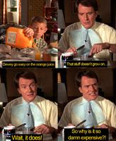

0


"As the use of artificial intelligence spreads across companies worldwide, it is relieving workers of tedious old chores but creating new ones," reports the Los Angeles Times.
"Most people don't realize the amount of time that they're spending working on the tools to get the time savings that they're professing," said Paul Leonardi, Duca Family professor of technology management at UC Santa Barbara."
Leonardi is one of the co-authors of the new study published by the Work AI Institute, whose contributors include academics from Stanford University and UC Berkeley. The institute is sponsored by AI company Glean... The research surveyed 6,000 digital workers across the United States, the United Kingdom, and Australia between December and January. The report found that we are in a phase of significant personal productivity gains, but few companies are translating these gains into revenue and business growth. While 75% of individuals reported a boost in productivity, only 13% of the organizations say they have seen significant business gains as a result of AI adoption, the survey found...
The reason the boost in productivity sometimes leads to waste, Leonardi said, is the time people spend correcting the bot's work and gathering the right files, documentation, and tacit knowledge required for it to produce high-quality output. "It's pretty striking the amount of time and effort people are spending," Leonardi said. Most employees now spend over six hours a week of their workday babysitting their work chatbots, the survey said. There is a "thick, mostly invisible layer of human labor holding the whole thing together," the report said. The survey found that for every hour a worker spends getting useful output from AI, they spend roughly another hour making it usable. Of the total time workers spend interacting with AI each week, 37% goes to botsitting, 36% to actually using the tool to produce work.
Part of the reason so much time disappears into botsitting is how often the tools fall short: Workers report that more than a third of AI sessions fail outright, requiring a full restart or substantial rework. Paradoxically, as more workers hand over bigger parts of their jobs to AI, they are offloading personal judgment and responsibilities to the bots. The survey found 41% of workers say they sometimes deliver AI-generated work they couldn't explain if asked... "I think what's happening with a lot of these Gen AI tools right now is we're essentially expecting individual contributors to act as managers," Leonardi said. "They're just managing these AI tools, AI agents, and we're expecting that they'll be able to produce way more, but we're not taking into account all of the work that actually goes into managing."
This problem isn't likely to go away.
Read more of this story at Slashdot.
UK's Members of Parliament (MP) were "looking for proof that smartphones and social media are rotting children's brains," writes The Register — but they got "a less satisfying answer from neuroscientists on Wednesday: nobody can really prove it."
Appearing before the Science, Innovation and Technology Committee this week, three researchers spent much of the session explaining that concern and evidence are not quite the same thing. Asked what evidence exists on the impact of digital devices on infants and young children, Professor Denis Mareschal, director of the Centre for Brain and Cognitive Development at Birkbeck, replied: "There is very little, if any, causal research in the early years. Almost everything is correlational."
MPs kept coming back to the question — and the experts kept coming back to the same answer. When questioned about social media's impact on adolescents, Professor Sarah-Jayne Blakemore of the University of Cambridge was equally cautious. "What evidence do we have of the impact of digital devices or social media on the adolescent brain?" she asked. "Almost nothing. There are a few small studies, but they haven't been replicated, and they're purely correlational...."
MPs also wanted to know whether neuroscience could settle one of the liveliest arguments in the debate: how old a child should be before they're allowed onto social media. "What neuroscience can't do is pinpoint a precise age," Blakemore said. "The individual differences in brain development are vast...." If there was a takeaway from the hearing, it was that concern about digital childhood is running well ahead of the evidence needed to settle the argument.
Read more of this story at Slashdot.
Steven Spielberg grants that his 1977 UFO film Close Encounters was "speculative," writes the Associated Press, but "Disclosure Day, he insists, is the real deal."
"It's my first film that will be considered science fiction that I do not consider to be science fiction," Spielberg said in a recent interview. "It's much more reflective of the world as it is evolving and discoveries that are being made as we speak." Spielberg, at 79, is trying to revive and reconsider the alien wonder that's long lingered in his mind, from "E.T." to "War of the Worlds." "Disclosure Day," Spielberg's first summer movie in a decade, is already being hailed as one of his best in years. But this time, Spielberg is testing whether he can conjure some of his trademark movie magic less with imagination than with conviction. "I've been a believer since I made 'Close Encounters' 50 years ago," Spielberg says. "But I would always say: Until I've seen a UAP or a UFO with my own eyes, I'm not going to categorically state that life from out there has come here. But I've changed that," he adds. "I'm now willing to change my mind because of the circumstantial evidence which is overwhelming..."
Spielberg, having long followed reports of alleged alien encounters, was inspired by the 2023 House Subcommittee on National Security hearing on UAPs: Unidentified Anomalous Phenomena. Among the witnesses was whistleblower and former Air Force intelligence officer David Grusch, who testified that the government concealed a program investigating UAPs. The Pentagon then denied it... Those 2023 testimonies and others so fueled Spielberg that he produced a 50-page treatment on what would become "Disclosure Day." During the writing process with Koepp, he texted him more notes, he says, "than I've ever sent to anyone in my life."
"There was a period in there where I believe he re-read the script every single day for a year," Koepp says. "We'd be in different time zones and I would wake up to 30 or 35 texts from his most current reading of the script. When the leader of the project has that level of commitment, it tends to bring along everyone. You up your game."
The article calls it "a grand bookend for one of the most cosmically-minded moviemakers of our time." But the man who filmed some of the world's first summer blockbusters also shared his thoughts on the future of movies. "Even though the numbers are still not pre-COVID level numbers for any films being released now, it's more robust than it has been for many years. The audience gives me belief that people still want to congregate in a dark space in the company of strangers to share an experience of a film made by storytellers. And that gives me faith to continue making films."
Rolling Stone wrote that "There's a lot to love in Disclosure Day." Though they also offer this pithy summary of its plot. "Remember when Steven Spielberg digitally replaced the guns in the hands of government agents for the 20th anniversary of E.T., then expressed regret about the decision? Imagine that he not only restored the weapons but crafted an entire two-and-a-half-hour feature around that one sequence as a mea culpa. That's Disclosure Day."
The filmmaker may be staging a pulpy campaign with this sci-fi throwback, but he sincerely seems to believe the truth is out there — and will set us free... [W]hile the quality of his output can vary wildly when you look at the big picture of his career, there's still a baseline of love — for filmmaking, for storytelling through images, for giving people an experience that pushes emotional buttons and taps adrenal glands — that gives his work a sense of vitality and displays the sensibility of an artist at work...
There's also a weird full-circle feel to it, and not just because he's returning to the fertile ground of Close Encounters and his other science fiction spectacles. You can see traces of everything from Duel to Minority Report show up, to the point where this almost doubles as a career retrospective in miniature... Yes, Spielberg does believe that we are not the only game running in the cosmos. But he also believes that our better angels have not left the building, and that movies still have the power to communally blow minds and open hearts.
The Associated Press calls it "a grand bookend for one of the most cosmically-minded moviemakers of our time" and "a distant answer to the final notes of Close Encounters."
Read more of this story at Slashdot.
"Blizzard Entertainment is continuing its crusade against private World of Warcraft servers," reports the gaming news site Aftermath:
The company filed a new lawsuit on Friday in a California court against the makers of Project Ascension, alleging copyright infringement, Digital Millennium Copyright Act violations, and other claims. Blizzard Entertainment claims that Project Ascension is a "lucrative way to exploit and profit from the popularity of the WoW game experience," according to the complaint, obtained by Aftermath. Blizzard Entertainment's lawyers say in the complaint that Project Ascension purports to have "over a million players." Lawyers write that the developers have "distributed (and are continuing to distribute) millions of pirated copies of Blizzard's copyrighted WoW game software."
They also allege that Project Ascension's servers are hosted on Russian "bulletproof" servers with Aeza Group, a company that was sanctioned in 2025 "for its role in supporting cybercriminal activity targeting victims in the United States and around the world," per a U.S. Department of Treasury press release... Project Ascension lets players combine pieces of World of Warcraft's different classes to build unique characters. It's free-to-play, but players can purchase in-game currency, Donation Points, to buy things in-game, such as cosmetics and experience boosts. Blizzard Entertainment's lawyers assert that Project Ascension has made "millions of dollars from the sale of Donation Points...."
Blizzard Entertainment successfully sued a popular World of Warcraft server called Turtle Wow last year. The project had been running since 2018, taking donations from players for the free-to-play server. Both sides announced in April 2026 that they'd reached a settlement after Blizzard Entertainment was awarded a permanent injunction to shut down Turtle WoW. The details of the settlement were not made public. Turtle WoW was shut down for good shortly after May 15; players gathered online to mourn the end of the server.
Read more of this story at Slashdot.
Simon Ritter joined Sun Microsystems in 1996 and spent time working in both Java development and consultancy. He's now written an opinion piece for InfoWorld warning that "Between 2029 and 2032, every currently supported long-term support (LTS) version of Java will reach end-of-support within a single three-year window."
That's Java 17 in 2029, Java 8 in 2030, Java 21 in 2031, and Java 11 in 2032...
On paper, this looks like a manageable upgrade cycle. In practice, it creates a collision of timelines that most enterprises have failed to forecast. Organizations attempting to modernize incrementally — moving application by application, version by version — are operating on a model that the calendar has already rendered obsolete... [W]hen every major Java version expires in the same compressed window, sequential planning collapses. By the time this becomes obvious, organizations will be forced into reactive mode, making rushed decisions under extreme pressure.
For organizations planning traditional stepwise upgrades — Java 8 to Java 11 to Java 17 to Java 21 — this convergence elevates a routine maintenance task into a structural crisis. Enterprises with large Java estates will be forced to upgrade multiple applications across multiple versions simultaneously to maintain security compliance and business continuity.
"Parallel modernization requires parallel capacity — something most organizations haven't budgeted for," he points out. "This explains why traditional approaches struggle to scale."
Read more of this story at Slashdot.
The Sunday Times reports:
A criminal investigation has begun after a police officer allegedly used AI to create evidential material in a "number of cases". Derbyshire Constabulary said an officer was being investigated over an allegation of suspected perverting the course of justice. The Crown Prosecution Service (CPS) confirmed it was engaging with defence lawyers and the courts over potentially affected cases...
It is the first known allegation of AI misuse by police in a criminal case in the UK, but it follows an incident last year in which West Midlands police relied on AI-generated material that fabricated a match involving Maccabi Tel Aviv. The material was used in intelligence supporting a proposed ban on away fans at the club's match against Aston Villa.
Read more of this story at Slashdot.
Slashdot reader BrianFagioli writes:
Shutterstock has unveiled what it calls a "human-led, AI-powered" creative platform that combines its massive library of [human] contributor-created content with AI image and video generation, AI editing, conversational search, prompt enhancement, and automated model selection tools. The company says the goal is to help creators move from idea to finished work faster [in a single application] while maintaining commercial licensing protections and contributor royalty payments... While Shutterstock repeatedly emphasizes human creativity, much of the platform's future appears centered on AI-generated and AI-modified content.
An article at Nerds.xyz suggests Shutterstock's AI tools let users "transform existing content into something new," while noting Shutterstock's repeated references to human creativity "almost feel defensive."
But it points out other companies including Adobe and Canva "and countless startups are all racing to integrate AI into creative workflows."
Read more of this story at Slashdot.
Microsoft dropped "massive" updates for six stock Windows apps, reports the "Microsoft enthusiast" site Neowin.
Here's some of their more interesting highlights for Clock, Media Player, Calculator, Voice Recorder, Photos, and Paint:
The Photos app (version 2026.11060.2004.0):
AI watermarking — "AI-generated or edited images can now carry a visible Copilot watermark. You choose Never, Always, or Ask Every Time in Settings, with a confirmation when saving. The watermarking is off by default in settings."
Calculator (version 11.2605.9.0):
More accurate square-root results. "Fixed rare cases where a calculation that should equal zero (like sqrt(2.25) — 1.5) returned a tiny leftover value instead...."
Reliable launch after upgrading. "Fixed an issue where upgrading from much older versions could leave outdated settings that stopped the app from opening..."
The Clock app (version 11.2605.9.0):
"Timers keep counting after they hit zero — When a timer runs out, it now keeps counting up (for example, -00:27:31) so you can see how far past the time you've gone..."
"Correct sun and moon icons during midnight sun — Fixed an icon that wrongly showed a moon during all-day daylight in polar regions... "
"No more double announcements — Screen readers no longer read the timer value twice."
Media Player (version 11.2605.14.0).
"Playlists need a name — You can no longer accidentally save a playlist with a blank name."
Read more of this story at Slashdot.
"A year after spending over $14 billion to bring in Alexandr Wang and a group of his top Scale AI engineers to revamp its artificial intelligence efforts, Meta is at least back on the map in AI," reports CNBC, "though it's still far behind OpenAI, Anthropic and Google in the market."
Wang's big accomplishment was the delivery of the Muse Spark AI model in April, marking Meta's first jump into proprietary foundation models and away from a strict adherence to open source, or open weight as it's more commonly called in AI... "Meta needs to provide more proof points of both adoption and commercialization," said Ralph Schackart, an analyst at William Blair who recommends buying the stock. "Investors are looking for Meta to monetize a new AI-first product, beyond the substantial positive impact AI is having on enhancing the advertising models." Wall Street, at least so far, is unimpressed. Meta's stock is down 18% over the past 12 months, the worst performer in the megacap group, along with Microsoft, which has its own challenges in AI. That's even after Meta reported 33% revenue growth in the first quarter, the fastest rate of expansion for any period since 2021.
For Meta, the problem started with what some industry experts called, in hindsight at least, a strategic blunder. The company jumped into AI with its Llama family of models, offering an open-source approach that allowed developers to freely tinker, while the other big model makers charged for access. In April of last year, Meta's release of Llama 4 fell flat, failing to captivate developers and leading Zuckerberg to reconsider his company's approach to AI development... Since the release of Muse Spark, Meta has unveiled new AI and business-related subscription plans as part of an effort to expand its business beyond online ads. Historically, it hasn't worked. Meta still counts on ads for 98% of revenue. Schackart said he wants to see "tangible evidence of a growing list of new, AI-first products created by Muse Spark, even if monetization lags." He said that's "what investors are looking for."
No matter how good Wang's model may be, Zuckerberg has a high hill to climb with developers coming off the Llama debacle. "I think the AI community largely ignores Meta at this point," said Rob May, CEO of the startup Neurometric, which works in the realm of token engineering.... Krish Subramanian, the CEO of consulting firm KOI AI and former product head at IBM Consulting, said developers are more excited about Google's AI models than what Meta is offering. The appeal of Llama was that it specifically targeted developers wanting open-weight alternative models, while with Muse Spark, Meta has made little effort in that direction, he said. "The lack of developer trust will come back to hit them if they don't focus on third-party developers," Subramanian said, noting that it took years for Microsoft to regain trust from open-source coders during the early days of Azure. "To just focus on a walled-garden kind of an ecosystem and ad revenue as the main source of income, they probably will never become the big player," he said.
A Meta spokesperson pointed to Wang's recent comments about the company's continued support for the open-source ecosystem, and said Meta still plans to offer outside developers access to Muse Spark's underlying technology via an API, as it previously announced. "We're already testing with some early partners, and look forward to releasing it this month," the spokesperson said.
"That Zuckerberg's metaverse and virtual reality ambitions have generated over $80 billion in total losses since late 2020 makes the AI pitch a tougher sell," the article points out, citing this observation from Howard Yu, business professor at Switzerland's International Institute for Management Development.
"He's running out of the space for his credibility to last," Yu said. "I think the virtual reality foray may have burned up a lot of his goodwill in front of investors."
Read more of this story at Slashdot.
Phoronix reports:
The AMD R600 Gallium3D driver saw 59 commits [last] Sunday to Mesa 26.2. Making this code restructuring and code cleaning all the more notable is that the improvements to this old AMD Radeon graphics driver was done in part by GitHub Copilot.
Gert Wollny has been among the few open-source developers left working on the AMD R600g driver that covers from the Radeon HD 2000 series through Radeon HD 6000 series graphics cards... [T]he old open-source GPU driver support is being assisted by AI long after the upstream vendor has stopped working on this driver — the Radeon HD 2000 "R600" series launched in 2007.
Read more of this story at Slashdot.
America's Energy Department "wants to build a single national platform for doing science with AI," reports Communications of the ACM:
It is called the Genesis Mission, and the idea is to connect the country's 17 national laboratories, their supercomputers, scientific datasets, and a growing layer of AI models and agents into one system researchers can access. The DOE has taken to calling it 'a national operating system for science.' That means treating compute, data, and AI models the way the country treats power lines and highways, as shared national plumbing everyone else builds on top of.
If it works, Genesis will change how scientific work gets organized, checked, and scaled, with AI helping run the whole pipeline from hypothesis to simulation to experiment and back. The pitch is that this is better understood as infrastructure policy than as another research program. Genesis is now moving from announcement into execution. President Trump signed the executive order launching it in November 2025. This past February, the DOE published 26 science and technology challenges for the program, and in March it opened a $294-million call for research teams in fields like nuclear energy, quantum information science, semiconductors, and biotechnology.
The program is also beginning to reach beyond U.S. borders. In June 2026, Japan moved to become Genesis's first international partner. The two governments plan to invest a combined $1 billion over five years, with Japan contributing $500 million toward joint work in quantum technology, nuclear fusion, and biotechnology. The stated goal is staying ahead of China in the fields where AI is advancing fastest. The open question is whether a federated platform this big can actually work, or whether it ends up as one more expensive coordination exercise.
Read more of this story at Slashdot.
The price of bitcoin dropped 13% down to $64,394 just in June — but there's more bad news, reports CNBC." "Bitcoin has lost nearly half its value since reaching a record high above $123,000 in July 2025."
While previous bitcoin selloffs were often followed by large rebounds in price, the latest decline may prompt some investors to revisit why they own bitcoin in the first place, [says Daniel Sotiroff, associate director of ETF and Passive Strategies Research at Morningstar]. Here's what he and other experts have to say about the case for holding crypto, and how much exposure is appropriate for the average investor...
Not all financial professionals agree bitcoin belongs in a portfolio. Bitcoin differs from stocks, bonds and real estate because it doesn't generate earnings, interest payments or rental income that investors can use to estimate its value, says Robert Johnson, a finance professor at Creighton University. Instead, its price is largely determined solely by investor demand. "You cannot invest in Bitcoin, you can only speculate," he says.
Sotiroff agrees that bitcoin is difficult to value using traditional financial metrics. "The best analogy I've heard is that it's more like a collectible, because it's basically worth what other people are going to pay for it," he says.
Sotiroff told CNBC the recent selloff was a reminder that bitcoin's gains can be accompanied by equally dramatic declines — one reason many financial planners recommend limiting exposure to a small portion of a broader portfolio. "You just really can't make a call on what direction it's going to go," says Sotiroff.
Read more of this story at Slashdot.
A few weeks ago on a bike ride "inspiration struck" for Dave Eggers, reports SFGate...
Without a pen and paper handy, he was stuck texting the idea to himself. The problem? Eggers doesn't own a smartphone. "It takes 20 minutes to write a sentence," Eggers said... It's a funny predicament for Eggers, given that he's arguably the city's biggest proponent of the written word... Now age 56, Eggers' latest book is called "Contrapposto"...
On writing days, Eggers bikes to his sailboat docked near the Golden Gate Bridge. He writes using a hefty 1998 Mac that has never been connected to the internet. On the boat, he keeps "banker's hours," working 9 to 5 without any meetings or interruptions except for the occasional wildlife visit. "You're there with the cormorants and the occasional porpoise and sea lions and seals, and when you want to take a break, you walk around and you're in the thick of it, one of the most beautiful spots on Earth," he said. "Especially coming from the Midwest, it never gets old."
Given Eggers' decidedly low-tech existence, it's not surprising that the current state of San Francisco gives him pause, but there's a streak of hope that underlies his concerns. He abhors the growing surveillance technology that's gripping the city, refusing to get into Ubers that use recording devices, but he feels a well-written ballot measure about Flock cameras could potentially save our dwindling privacy. ChatGPT's effects on the art of writing are demoralizing, but he welcomes that teachers are re-embracing pencil and paper, with cursive making a big comeback. The wave of artificial intelligence ads blanketing bus stops imploring companies to stop hiring humans are so over the top, they'd sound cliché if he were to include them in one of his dystopian tech industry novels like "The Circle" or "The Every," but tech philanthropy has helped many of his projects flourish.
Case in point, Art + Water, a new art space scheduled to open next year on Pier 29 funded largely by art world donations... Co-founded with the artist JD Beltran, the space is slated to operate as an old-school apprenticeship system, hosting 10 artists in residence mentoring 20 students, all free of charge... The ultimate goal is to break down the financial barriers that keep students from pursuing art.
Thanks to Slashdot reader destinyland for sharing the article.
Read more of this story at Slashdot.
The Wall Street Journal reports:
The Trump administration's decision to halt all foreign use of Anthropic's most capable AI models was prompted by conversations between Amazon Chief Executive Andy Jassy and U.S. officials including Treasury Secretary Scott Bessent, people familiar with the matter said.
Researchers at Amazon had used a series of prompts to get Anthropic's Fable 5 model to provide them with information that could be used to aid cyberattacks and was supposed to be off limits, Jassy told the officials, according to people familiar with the matter. Tech industry executives have been in regular touch with the administration about the power of cutting-edge AI tools. Shortly afterward, White House officials held a meeting to discuss how to respond and security researchers began testing Amazon's claims. The officials asked Anthropic to fix the vulnerabilities or take down the model, according to administration officials. The officials decided that the most direct way to address that risk was by preventing foreign governments, companies and individuals from accessing the tool, the people said. President Trump later signed off on the action despite reservations about it hindering innovation, a senior White House official said.
The administration had long felt that Anthropic, one of the leaders in America's AI race, couldn't be trusted to manage the security risks its new model presented. Friday's call between some administration officials and Anthropic Chief Executive Dario Amodei reinforced that feeling, the people said...
Anthropic has said that the vulnerabilities like those flagged by Amazon are relatively basic. The company has said that other publicly available models are capable of discovering them and that they don't represent a full so-called jailbreak, a point of view shared by some security researchers familiar with Amazon's research.
The article points out that Amazon is "a big investor in Anthropic, supply Anthropic with chips for data centers.
Read more of this story at Slashdot.
"Battery breakthroughs will lessen AI's demand on the electricity grid," argues The Washington Post's editoral board, arguing that GM's latest moves "offer a fresh reminder that resource constraints can be solved by innovation."
Or As Fortune put it, "America's electric grid is buckling under extreme weather, aging infrastructure, and an AI build-out that is quietly rewriting U.S. power demand — and General Motors wants to turn that crisis into a business." They describe GM's plan as offering itself "as a distributed utility in disguise... stitching together hundreds of thousands of battery-powered cars, new grid-scale storage, and a unified charging platform into what amounts to a virtual fleet of power plants."
The bet puts GM on a collision course with Ford's newly branded Ford Energy unit as both Detroit rivals race to repurpose underused EV capacity for a more urgent problem: keeping the lights on in the AI era. GM's case rests on three planks. The first is its existing fleet. GM says more than 250,000 of its EVs on U.S. roads can already charge bidirectionally — pulling electricity from the grid and sending it back. "Every evening, a quiet transformation occurs across the American landscape," GM Energy vice president Wade Sheffer writes in an open letter to utilities and regulators, describing the EVs sitting in driveways as "a massive opportunity to aggregate energy storage capacity."
A firmware update is rolling out to customers with GM Energy's vehicle-to-home hardware, converting those systems into full vehicle-to-grid assets with no new hardware and turning home backup systems into grid resources when utilities need them. GM is piloting the idea in Michigan with DTE Energy at 30 employee homes, and has sketched a 2030 vision with Pacific Gas & Electric in which more than 52,000 GM EVs help balance the grid out of a projected 130,000 vehicles in the area.
GM is also "seeking partnerships with utility companies nationwide to assist in offering such vehicle-to-grid services for customers," reports CNBC, noting it's one of two moves "meant to address concerns about rising energy costs amid an artificial intelligence boom."
Forbes reports that GM's second goal "is to leapfrog the dominant battery cell tech used for energy storage packs right now" — right past the LFP (lithium-iron phosphate) stage, "which is dominated by China."
Sodium batteries are cheaper to use than LFP because they don't need an additional cooling system. They also have a 20-year usable life and are made from materials that can be sourced from within the U.S., the company said at a briefing in San Francisco on Tuesday.
"Sodium-ion actually is the better chemistry for that application. And when I say sodium-ion is better, I mean GM's version of sodium-ion," Kurt Kelty, GM's battery chief and a long-time Tesla battery executive, told Forbes. He said GM is seeing great results from its prototypes, even at scorching temperatures of 55 Celsius (131 Fahrenheit).
"Sodium-ion-powered energy storage systems have the potential to operate without active cooling and with much less system complexity," Kurt Kelty, GM's vice president of battery and sustainability, said Tuesday in a blog post. "In large energy storage systems, that matters." Not having to cool the battery cells could lead to lower upfront costs as well as operating costs, the automaker said.
TechCrunch reports on GM's big new partnership with energy-storage startup Peak Energy to develop GM's sodium-ion battery chemistry for grid-scale deployments:
GM wouldn't share with TechCrunch how much money it is investing in this energy-storage effort. But we do know the company has committed $900 million to commercialize new battery chemistries, an investment that includes a new battery-development center. .. The first GM cells are expected to enter trial production at the company's Battery Cell Development Center in 2028.
"Our next-generation sodium-ion cell development will drive energy density higher," promises GM's blog post, arguing they're extending the company's battery expertise and technical infrastructure "into the electrical grid itself. If we get this right, we will not just build better batteries. We will help create a more resilient, more affordable and more flexible energy future... Every improvement we make strengthens the development stack that supports both EVs and energy storage."
"The message: GM isn't just selling cars into a stressed grid; it's supplying the batteries to stabilize it," argues Fortune.
And GM also announced they're augmenting their apps with an "Energy Pass" offering "seamless access to Tesla Supercharger, IONNA, Electrify America, and soon, ChargePoint and EVgo networks." Their goal is to simplify the charging experience with an app "that covers nearly 70% of all DC fast chargers in the United States, plus many Level 2 chargers, all through one app."
Read more of this story at Slashdot.
Ryan Lawler / Axios : Hypha, which extracts data from private-market documents to create workflows for underwriting, portfolio monitoring, and asset management, raised a $50M seed — Hypha, which is building an AI-powered operating platform for private-market investors, raised $50 million in seed funding led …
Russell Brandom / TechCrunch : Sandstone, which builds AI-powered workflow automation tools for legal teams at small and mid-sized businesses, raised a $30M Series A led by Lightspeed — With Harvey and Legora burning through eight-figure funding rounds, legal tools have proven to be one of the fastest-growing and most hotly contested verticals among AI startups.
Zain Khan / New York Post : Sundar Pichai faced a walkout at his Stanford commencement speech, as 100+ students left amid chants of “Free, free Palestine” over Google's ties with Israel — See more of our coverage in your search results. — Add The California Post on Google
Wall Street Journal : Sources: Frank founder Charlie Javice, sentenced in September 2025 to 85 months for defrauding JPMorgan Chase, has been seeking a presidential pardon from Trump — The entrepreneur sold her startup Frank to the bank for $175 million and was sentenced in September to over seven years in prison for fraud
Emily Nicolle / Bloomberg : A profile of Kalshi COO Luana Lopes Lara, who has overseen a tremendous pace of growth over the past year as the company faces political and regulatory backlash — The firm's co-founder talks about the celebrity buzz that sparked her interest in prediction markets, the legal battles her firm faces and Jay-Z's advice.
Zeyi Yang / Wired : Chinese Tesla drivers are using tiny plastic heads to fool Tesla's distracted-driving controls, which appear unable to distinguish figurines from real people — A cottage industry of celebrity figurines, blinking screens, and other DIY gadgets is helping drivers bypass Tesla's distracted-driving controls.
Jack Adamovi&cacute Davies / Bloomberg : A government crackdown on online casinos operating in the Isle of Man has led to a major tax revenue loss, accelerating the island's slide toward a fiscal cliff — Online casinos were a big driver of the Isle of Man's economy. Lately, they've become a liability.
Satya Nadella / @satyanadella : Satya Nadella says companies must own their AI “learning loops” to compound human and token capital, or risk ceding all value to a handful of frontier models — I've been thinking a lot about the future of the firm in an AI-driven economy. This transition is different than any previous platform shift.
Maria Curi / Axios : Sources: senior Anthropic technical staff are in DC to meet WH officials and try to fix the Mythos 5 dispute; both sides say they are eager to resolve the issue — Senior technical Anthropic staff are in Washington to meet with White House officials to try to fix a dispute that has taken …
Bloomberg : Canadian PM says the Anthropic ban shows the dangers of “over-reliance on certain models”, and compares the risks to those that led to the 2008 financial crisis — Prime Minister Mark Carney said the US export ban blocking all foreign access to Anthropic PBC's latest artificial …
The Guardian : Sources: UK plans to announce an “Australia plus” under-16 social media ban, including restrictions on chats with strangers on gaming apps and under-18 curfews — Sources say hardline measures will also prevent young users from being able to talk to strangers on gaming apps
Reuters : EU says it is looking at the practical consequences of US restricting Anthropic's models, notes such measures “should not be discriminatory against partners” — The European Commission said on Sunday that it is assessing the practical implications of a U.S. export control directive …
Mark Gurman / Bloomberg : Siri AI is good enough to ease Apple's AI crisis; sources: the ability to tap third party AI models beyond OpenAI's is already active in internal iOS 27 builds — The company prepares for the foldable iPhone and touch-screen MacBook. — Apple's new Siri AI, despite mainly delivering …
Andrew Osborn / Reuters : Since Russia ratcheted up control over the internet this year, some Russians are turning to solutions like using multiple phones and VPNs to evade restrictions — In a quiet cafe popular for its free Wi-Fi and good coffee, a Russian interior designer logs onto a virtual private network …
Wall Street Journal : Ajinomoto says it can meet demand through 2030 for ABF, a key material for advanced chipmaking substrates, and plans to expand capacity instead of hiking prices — The company is expanding its capacity for Ajinomoto Build-up Film, with production expected to begin in 2032